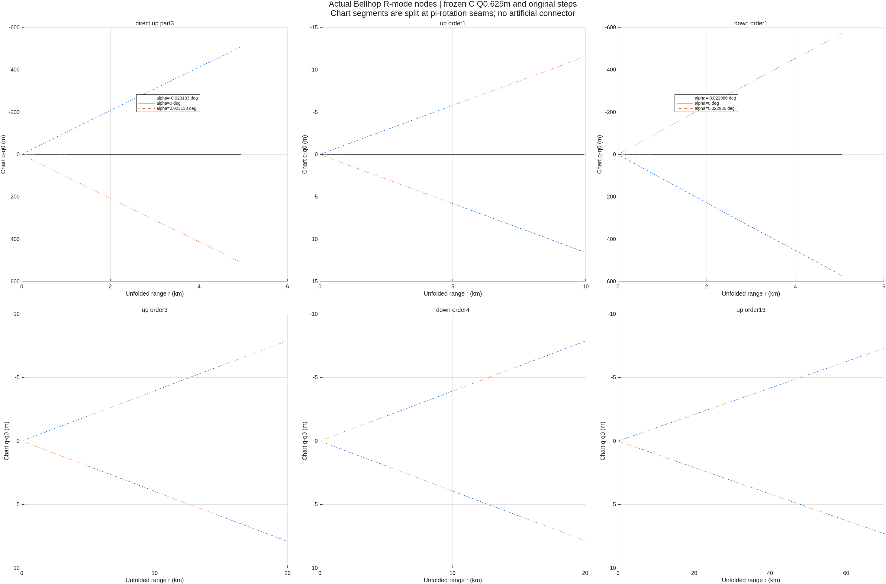
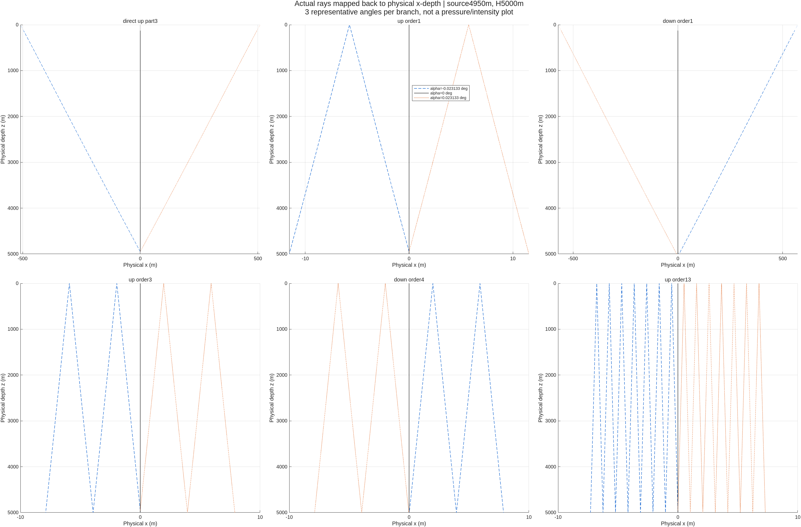

6类各3束：直达、首海面、首海底及3/4/13阶反射。仅R模式输出，沿用冻结C的介质、原步长、Q0.625m、REAL8和平面优化；没有接收复场求值，也不重算A/B/C。曲线为原生保存节点，不插值或平滑。

每次pi旋转跨chart的接缝单独分段，未用直线连接坐标跳变。可编辑FIG

z向下，分支内使用正确方向和偏移映射。只对超出目标水体的末端guard节点限定显示，原节点完整保存。可编辑FIG
轴线上垂直射线是alpha=0的几何路线，不代表声场中央亮带。少量代表声线不等同全部声束或独立束数收敛。
C与FFP原网格图册：统一20–70 dB色标、中央/近底/轴线幅相

本页复用已验收场图；几何声线不构成中央亮带证据。